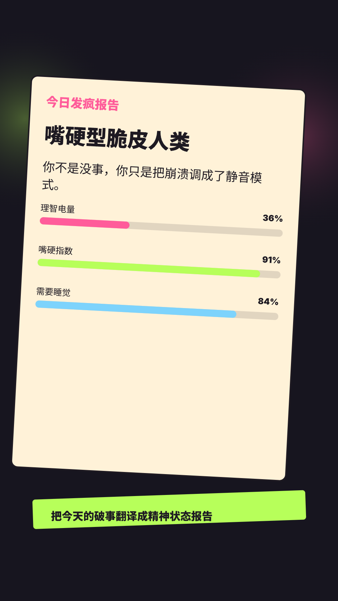

今日称号
体面崩溃观察员
你不是没事，你只是把崩溃调成了静音模式。
先别复盘人生，先喝口水。

内测采样中：会记录匿名点击、生成结果和反馈，用来改产品；不收真实手机号、微信或身份信息。
MOUTH HARD DIARY
不用认真写日记。选一个破事，挑一种嘴硬方式，30 秒生成一张能保存、能发群聊的今日发疯报告。
嘴硬值校准中，精神电量采样中。
你不是没事，你只是把崩溃调成了静音模式。
先别复盘人生，先喝口水。
APP NEXT
今天先用 H5 存一份本地档案，看看这件事是否值得继续做成 App。